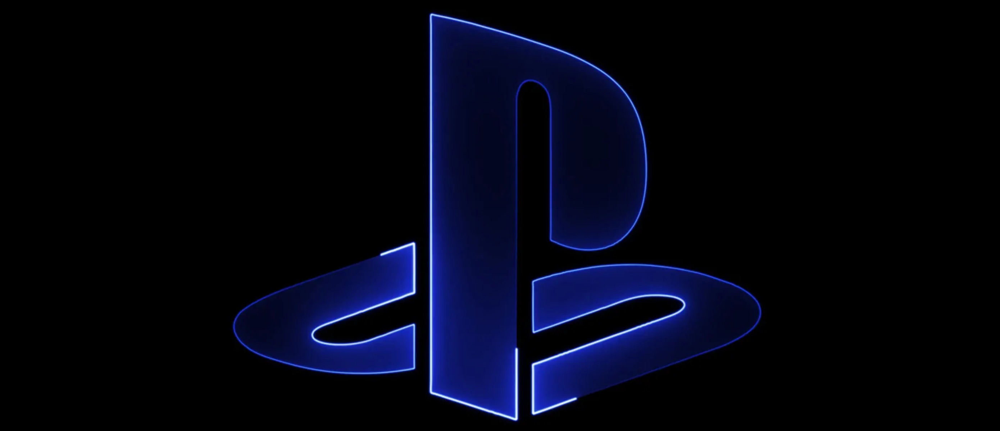

PS Store
PlayStation — игровая приставка пятого поколения, разработанная компанией Sony Computer Entertainment под руководством Кэна Кутараги. Выход приставки состоялся 3 декабря 1994 года в Японии, в США приставка появилась 9 сентября 1995 года, а в Европе — 29 сентября 1995 года. Приставка является первой игровой системой в линейке PlayStation. В 2000 году вышла обновлённая версия приставки под названием PSone, которая отличалась от оригинальной PlayStation значительно меньшим размером. Приставка оказалась очень популярной, обеспечив Sony прорыв в игровой индустрии, где до того момента безраздельно властвовали Nintendo и Sega.